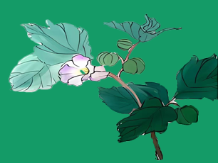
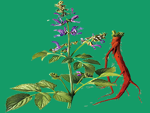
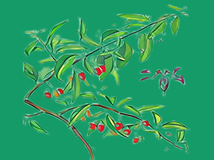
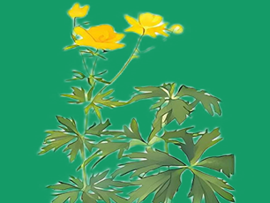
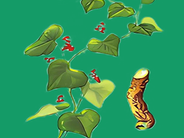
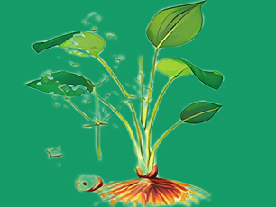
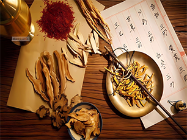
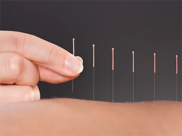
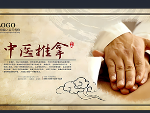
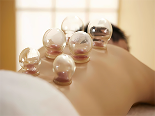

人物鉴赏
追溯历史
涵盖中医草药和中医医术等
为我国中医作出重大贡献的人物

钱乙
“儿科之圣”字仲阳，东平郓州（今山东郓城县）人，祖籍钱塘（今浙江杭州）。宋代著名儿科医学家。行医儿科，曾治愈皇亲国戚的小儿疾病，声誉卓著，被授予翰林医学士。曾任太医院丞，在多年的行医过程中，钱乙积累了丰富的临床经验，成为当时著名医家。

华佗
“外科圣手”字元化，一名旉，沛国谯县（今安徽亳州）人，东汉末年著名的医学家。少时曾在外游学，行医足迹遍及安徽、河南、山东、江苏等地，钻研医术而不求仕途。他医术全面，尤其擅长外科，精于手术。并精通内、妇、儿、针灸各科。

董奉
“医仙”又名董平，字君异，号拔墘，侯官县董墘村（今福州市长乐区古槐镇龙田村）人。少年学医，年青时，曾任侯官县小吏，不久归隐，在其家村后山中，一面练功，一面行医。董奉医术高明，治病不取钱物，只要重病愈者在山中栽杏5株，轻病愈者栽杏1株。

皇甫谧
“针灸鼻祖”幼名静，字士安，自号玄晏先生。安定郡朝那县（今甘肃省灵台县或今宁夏彭阳县人，后徙居新安（今河南义马市）。三国西晋时期学者、医学家、史学家，东汉名将皇甫嵩曾孙。

张仲景
“医圣”名机，字仲景，南阳涅阳县（今河南省邓州市穰东镇张寨村）人。东汉末年医学家，写出了传世巨著《伤寒杂病论》。它确立的“辨证论治”原则，是中医临床的基本原则，是中医的灵魂所在

杨继洲
“都门杨氏”名济时，以字行，明代著名针灸学家，梁家园杨氏第十三世裔孙，明代三衢（今浙江省衢州市衢江区廿里镇六都杨村）人。杨氏对针灸学造诣精深，理论精辟，能广收百家之长，充实自己的学术研究。

王惟一
“天圣针灸铜人”名王惟德，宋仁宗(赵祯)时当过尚药御，对针灸学很有研究，集宋以前针灸学之大成，著有《铜人腧穴针灸图经》一书，奉旨铸造针灸铜人两座。为中国著名针灸学家之一。王惟一对医学，特别是针灸学有重要的贡献。

李东垣
“东垣老人”字明之，真定(今河北省正定)人，他是中国医学史上“金元四大家”之一，是中医“脾胃学说”的创始人，他十分强调脾胃在人身的重要作用，因为在五行当中，脾胃属于中央土，因此他的学说也被称作“补土派”。

孙思邈
“药王”京兆华原（今陕西省铜川市耀州区）人，相传为楚大夫屈原的后人，唐代医药学家、道士，十分重视民间的医疗经验，不断积累走访，及时记录下来，终于完成了他的著作《千金要方》。唐朝建立后，孙思邈接受朝廷的邀请，与政府合作开展医学活动。

扁鹊
“扁鹊”姬姓，秦氏，名越人，春秋战国时期名医，渤海郡鄚人。他认真总结前人和民间经验，结合自己的医疗实践，在诊断、病理、治法上对祖国医学作出了卓越的贡献。
书籍鉴赏
回味经典
涵盖中医草药和中医医术等
相关书籍
中医药发展史
中华民族的祖先发现了一些动植物可以解除病痛，积累了一些用药知识。随着人类的进化，开始有目的地寻找防治疾病的药物和方法，所谓“神农尝百草”、“药食同源”，就是当时的真实写照。
在数千年的发展过程中，中医药不断吸收和融合各个时期先进的科学技术和人文思想，不断创新发展，理论体系日趋完善，技术方法更加丰富，形成了鲜明的特点。中医药是中华优秀传统文化的重要组成部分和典型代表，强调“道法自然、天人合一”，“阴阳平衡、调和致中”，“以人为本、悬壶济世”，体现了中华文化的内核。中医药还提倡“三因制宜、辨证论治”，“固本培元、壮筋续骨”，“大医精诚、仁心仁术”，更丰富了中华文化内涵，为中华民族认识和改造世界提供了有益启迪。
中医药文化
文化介绍
涵盖部分中草药
以及中医疗法
-

灯笼草
山藿香唇形科风轮菜属直立多年生草本植物。茎多分枝，被平展糙伏毛及腺毛。叶卵形，先端钝或急尖，边缘具疏圆齿状牙齿，榄绿色；轮伞花序多花，圆球状，苞叶叶状，花梗密被腺柔毛，花萼圆筒形，花冠紫红色，花期7-8月；小坚果卵形，褐色，平滑，果期9月。
-

丹参
大红袍为唇形科植物丹参的干燥根和根茎。春、秋二季采挖，除去泥沙，干燥。全国大部分地区都有分布。具有活血祛瘀，通经止痛，清心除烦，凉血消痈之功效。用于胸痹心痛，脘腹胁痛，症瘕积聚，热痹疼痛，心烦不眠，月经不调，痛经经闭，疮疡肿痛。
-

枸杞子
地骨子枸杞子，为茄科植物枸杞的成熟果实。夏、秋果实成熟时采摘，除去果柄，置阴凉处晾至果皮起皱纹后，再暴晒至外皮干硬、果肉柔软即得。遇阴雨可用微火烘干。枸杞子具有多种保健功效，是卫生部批准的药食两用食物。适量食用有益健康，配合菊杞茶有清肝明目的效果。
-

金莲花
旱金莲为毛茛科植物金莲花或亚洲金莲花的花。夏季花盛开时采收，晾干。功能主治为：清热解毒。治上感，扁桃体炎，咽炎，急性中耳炎，急性鼓膜炎，急性结膜炎，急性淋巴管炎，口疮，疔疮。①《山海草函》：治疔疮大毒，诸风。②《纲目拾遗》：治口疮，喉肿，浮热牙宣，耳疼，目痛，明目，解岚瘴。③《河北中药手册》：清热解毒。
-

石蟾蜍
趾叶栝楼石蟾蜍，中药名。为葫芦科植物趾叶栝楼Trichosanthes pedata Merr.et Chun的带根全草。分布于江西、湖南、广东、广西和云南。具有清热解毒之功效。用于咳嗽痰稠，咽喉肿痛，胸闷，便秘，痈肿疮疖，毒蛇咬伤。
-

泽泻
车苦菜泽泻，中药名。为泽泻科植物泽泻Alisma orientalis(Sam.)Juzep.的干燥块茎。冬季茎叶开始枯萎时采挖，洗净，干燥，除去须根和粗皮。利水渗湿，泄热，化浊降脂。用于小便不利，水肿胀满，泄泻尿少，痰饮眩晕，热淋涩痛，高脂血症。
-

中药熏蒸
蒸汽治疗疗法利用药物煎煮后所产生的蒸汽，通过熏蒸机体达到治疗目的的一种中医外治治疗疗法。中药熏蒸集中了中医药疗、热疗、汽疗、中药离子渗透治疗疗法等多种功能，融热度、湿度、药物浓度于一体，因病施治，药物对症，可有效治疗多种皮肤疾病。
-

中医针灸
针法和灸法针法是把毫针刺入患者身体某一穴位，运用捻转与提插等针刺手法来治疗疾病；灸法是把燃烧着的艾绒按一定穴位熏灼皮肤，利用热的刺激来治疗疾病。针灸由“针”和“灸”构成，是中医学的重要组成部分之一，其内容包括针灸理论、腧穴、针灸技术以及相关器具。
-
中医火疗
中医温熨疗法火疗可以算是一种温热的外治法，理论上具有祛风散寒、疏通经络的作用，对于一些外邪入侵，特别是外感风寒、经脉痹阻的疾病，如关节、肌肉疼痛等，可能有一定的作用。
-

中医推拿
推拿医者运用自己的双手作用于病患的体表、受伤的部位、不适的所在、特定的腧穴、疼痛的地方，具体运用推、拿、按、摩、揉、捏、点、拍等形式多样的手法和力道，以期达到疏通经络、推行气血、扶伤止痛、祛邪扶正、调和阴阳、延长寿命的疗效。
-

刮痧
刮痧刮痧是以中医经络腧穴理论为指导，通过特制的刮痧器具和相应的手法，蘸取一定的介质，在体表进行反复刮动、摩擦，使皮肤局部出现红色粟粒状，或暗红色出血点等“出痧”变化，从而达到活血透痧的作用。
-

拔罐
吸筒疗法历代中医文献中亦多论述，主要为外科治疗疮疡时，用来吸血排脓。后来又扩大应用于肺结核、风湿病等内科病证。随着医疗实践的不断发展，不仅罐的质料和拔罐的方法不断得到改进和发展，而且治疗的范围也逐渐扩大，外科、内科等都有它的适应症，并经常和针刺配合使用。因此，拔罐法成为针灸治疗中的一种重要方法。